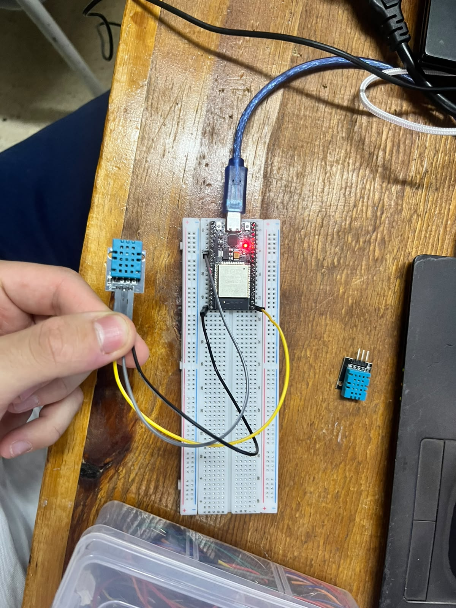
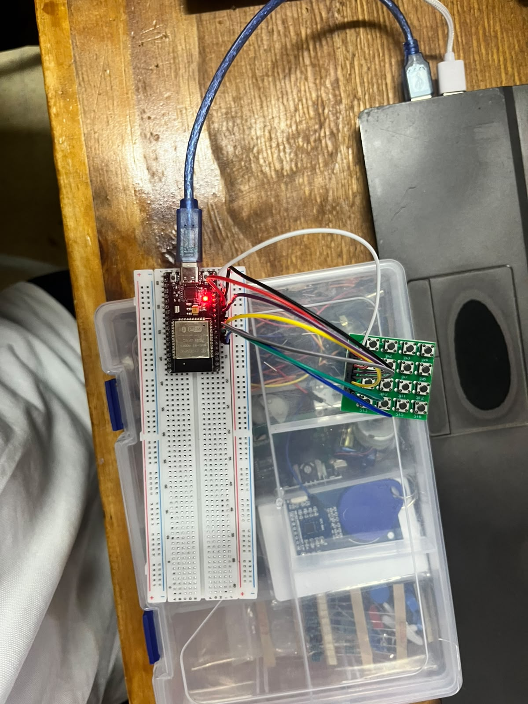
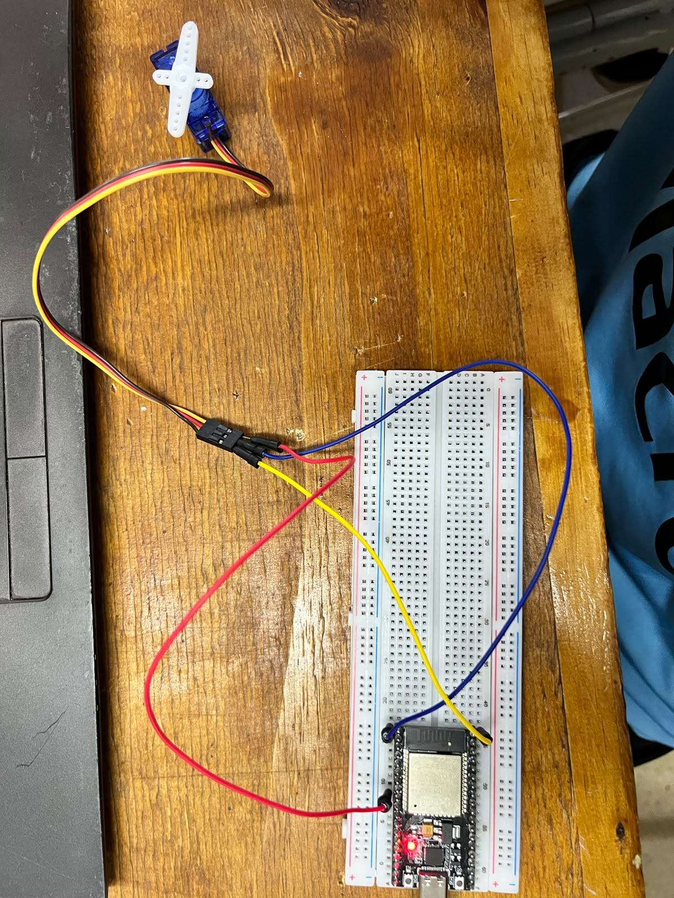
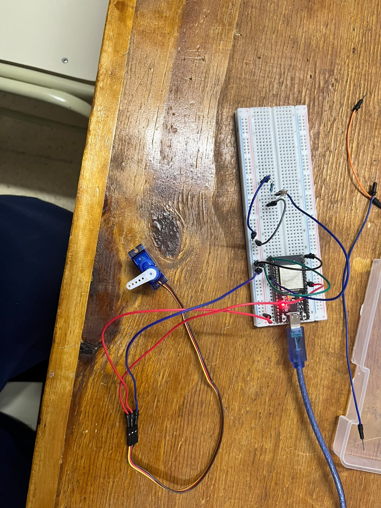
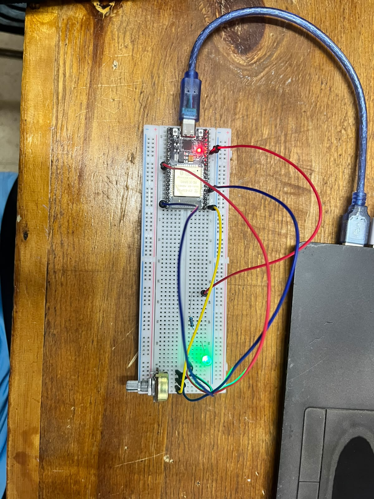
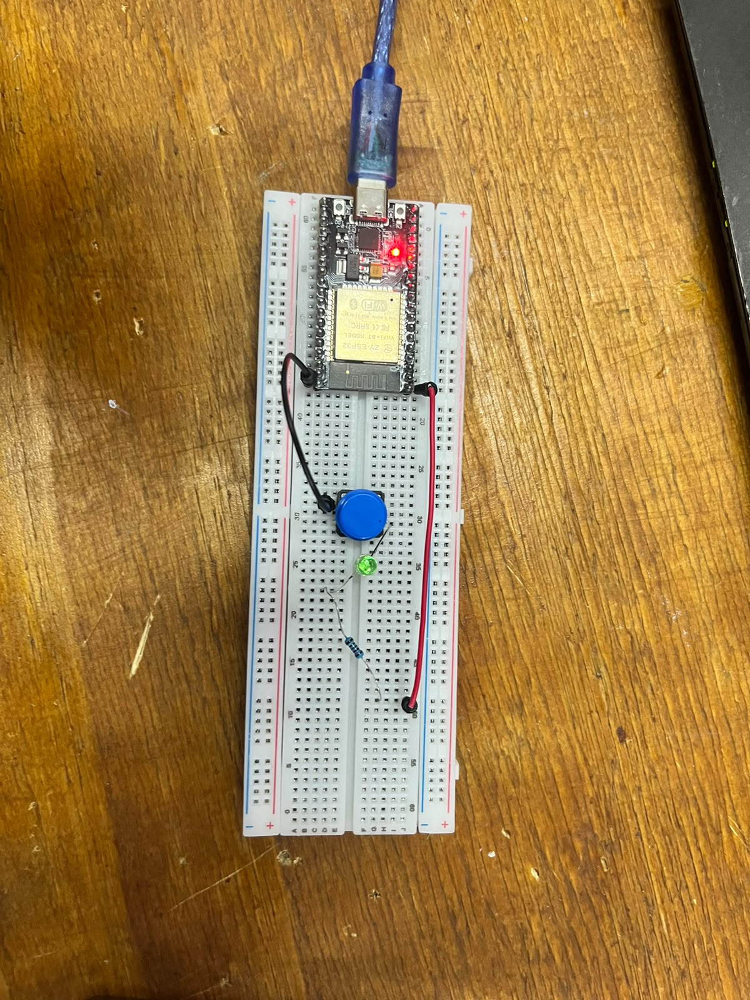

Investigación: Proyectos de Arduino e IoT (Wokwi)
Documentación técnica de las simulaciones y prácticas de programación en C++ con microcontrolador ESP32.
1. Servidor Web ESP32

Hardware: ESP32, Protoboard, Sensor DHT.
Lógica de Red: Utiliza las librerías de red del ESP32 para conectarse a una red Wi-Fi y levantar un servidor HTTP local.
Funcionamiento: Permite procesar peticiones web de clientes para visualizar los datos capturados por el sensor en tiempo real desde el navegador.
Ver Circuito en Wokwi2. Teclado Matricial 4x4

Hardware: ESP32, Keypad 4x4 (Matriz de botones).
Lógica de Escaneo: Configuración de pines de filas como salidas y columnas como entradas con pull-up interno.
Funcionamiento: El microcontrolador barre secuencialmente las filas enviando niveles bajos para detectar qué botón fue presionado.
Ver Circuito en Wokwi3. Módulo Relé y LED
Hardware: ESP32, Módulo Relé, LED, Resistencias.
Lógica de Conmutación: Envío de señales digitales de control (HIGH/LOW) desde un pin GPIO hacia la entrada del relé.
Funcionamiento: Actúa como interruptor controlado electrónicamente para aislar y manejar cargas de potencia o simular dispositivos.
Ver Circuito en Wokwi4. Pantalla LCD I2C

Hardware: ESP32, Display LCD 1602 con adaptador I2C (Dirección 0x27).
Lógica de Comunicación: Utiliza el protocolo bidireccional de dos hilos (SDA y SCL) para reducir el cableado tradicional.
Funcionamiento: Inicialización de la librería LiquidCrystal_I2C, encendido de retroiluminación y despliegue de texto por filas.
Ver Circuito en Wokwi5. Sistema de Ventana IoT

Hardware: ESP32, Servomotor, Sensores de control.
Lógica de Automatización: Lectura de variables del entorno y procesamiento condicional de estados.
Funcionamiento: Accionamiento mecánico automatizado para simular la apertura y cierre de una ventana de forma remota.
Ver Circuito en Wokwi6. Control de Servomotor

Hardware: ESP32, Servomotor.
Lógica PWM: Generación de modulación por ancho de pulsos para definir el ciclo de trabajo.
Funcionamiento: Envío de pulsos de control específicos para posicionar el eje del servomotor en un ángulo exacto.
Ver Circuito en Wokwi7. Lectura de Potenciómetro

Hardware: ESP32, Potenciómetro, LED, Resistencias.
Lógica Analógica: Uso del conversor Analógico-Digital (ADC) del ESP32 para leer la variación de voltaje.
Funcionamiento: Mapeo de los valores leídos para controlar parámetros como la intensidad lumínica de un LED.
Ver Circuito en Wokwi8. Entrada Digital (Botón)

Hardware: ESP32, Pulsador, LED, Resistencia.
Lógica de Entradas: Lectura digital de estados lógicos discretos (HIGH o LOW).
Funcionamiento: Detecta el flanco de presión del botón para alternar el estado del LED o ejecutar una subrutina.
Ver Circuito en Wokwi